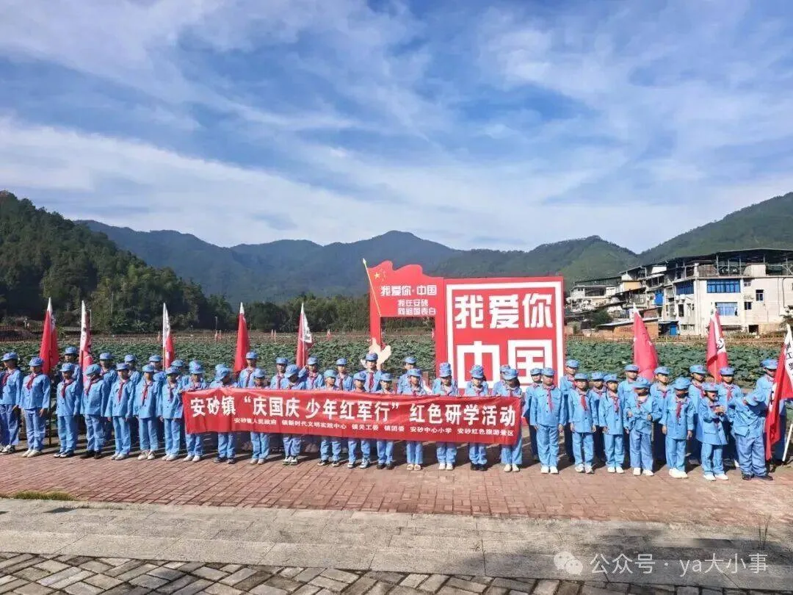

中文原文
2025-06-30 09:25:57 作者：黄中泉 李峥 来源：福建日报 责任编辑：周冬
玉米采摘、抓鱼钓虾比赛、巧手包粽子……日前，在永安市安砂镇热水村，一场场充满趣味的“亲子盛宴”，让孩子们走进大自然，于欢声笑语中拓展视野、增长知识，体验到不一样的农事乐趣。
“这里蓝天白云，绿水青山环绕其间，植被丰富、空气清新，今天我专程带着女儿前来，感受这份难得的清凉与宁静。”来自清流县的黄先生说。
“端午期间，亲子抓鱼活动特别火爆，一天两场，场场爆满，孩子在水中尽情嬉戏，享受着抓鱼的乐趣，家长们也沉浸在孩子的欢声笑语之中。”景区负责人蓝文宾说。
热水村党支部书记邓长云看着眼前热闹非凡的场景，也打开了“话匣子”：“以前这里非常冷清。如今，通过资源整合，已形成了集旅游、观光、康养、研学等于一体的乡村振兴新载体，为村庄带来了新的生机与活力。”
据了解，今年端午节当日，景区所有住宿单元全部客满，营业收入达2万余元。这一亮眼成绩的背后，是景区亲子游项目的持续升温。蓝文宾表示，自亲子游项目推出以来，已建立5个300人规模的家长群，报名需求持续高涨。为满足不同家庭的需求，景区还推出了“亲子营”“独立营”两种模式。“亲子营”以家长陪伴为主，适合2至12岁儿童，注重互动性和趣味性，让亲子关系在互动中得以加深；“独立营”则面向稍大孩子，旨在培养其独立性和社交能力，让孩子们在独立探索中成长。
近年来，针对悄然而至的“遛娃时代”，安砂镇创新推出了亲子游、研学游、红色游、康养游等多条亲子文旅精品线路，花样繁多的“打开方式”，有力推动了“文旅＋”新业态蓬勃发展，成为吸引客流、带动消费的一股新兴力量。
English translation
June 30, 2025, 09:25:57 | By Huang Zhongquan, Li Zheng | Source: Fujian Daily | Editor: Zhou Dong
Corn picking, fish-catching and shrimp-fishing contests, and skillful zongzi-wrapping… Recently, a string of fun-filled parent-child activities in Reshui Village, Ansha Town, Yongan City, invited children to step into nature. Amid laughter and joy, they broadened their horizons, acquired new knowledge, and experienced the unique pleasures of farming activities.
“With blue skies, white clouds, lush mountains, and clear rivers, this place is surrounded by rich vegetation and fresh air. I specially brought my daughter here today to enjoy this rare tranquility and coolness,” said Mr. Huang from Qingliu County, a neighboring county approximately 1.5-hour drive from Yongan.
“During the Dragon Boat Festival, our parent-child fish-catching activities were extremely popular, with two sessions a day and every session packed. Children played joyfully in the water, enjoying the fun of catching fish, while parents immersed themselves in their children’s laughter and joy,” said Lan Wenbin, manager of the scenic spot.
Witnessing the bustling scene, Deng Changyun, Party Secretary of Reshui Village, shared his thoughts: “This area used to be very quiet and desolate. Through resource integration, we’ve now established a new rural revitalization platform integrating tourism, sightseeing, wellness, and educational tours, breathing new life into the village.”
On this year’s Dragon Boat Festival, all accommodation at the scenic spot was fully booked, with revenue reaching more than 20,000 yuan. This strong performance reflects the growing popularity of the area’s parent-child tourism programs.
Lan Wenbin said that since the parent-child programs were introduced, five parent WeChat groups—each with 300 members—have been set up, and demand for sign-ups has remained high. To meet the needs of different families, the scenic area now provides two options: the Parent-Child Camp and the Independent Camp.
The Parent-Child Camp focuses on accompanied participation, suitable for children aged 2 to 12. It helps to deepen parent-child relationships through activities.
The Independent Camp is designed for older children. It allows them to grow through independent exploration.
In recent years, responding to the growing trend of “child-friendly travel,” Ansha Town has innovatively developed multiple cultural tourism routes, including family tours, educational expeditions, revolutionary history tours, and wellness retreats. These diverse offerings have significantly boosted the “tourism + ” mode, emerging as a key driver for attracting visitors and stimulating consumption.